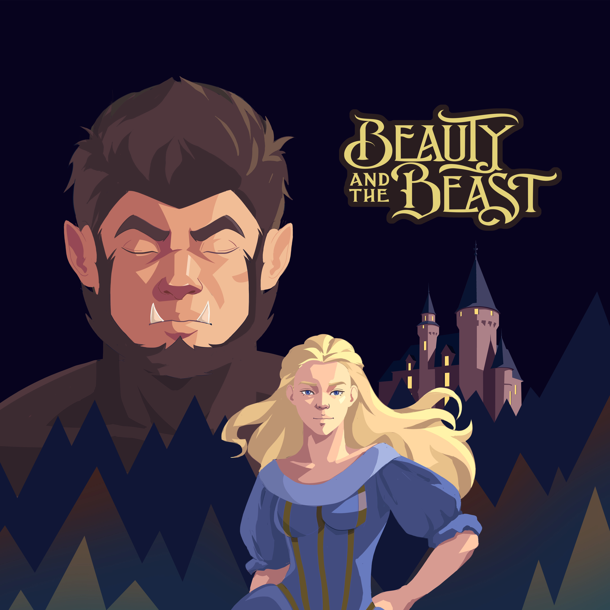
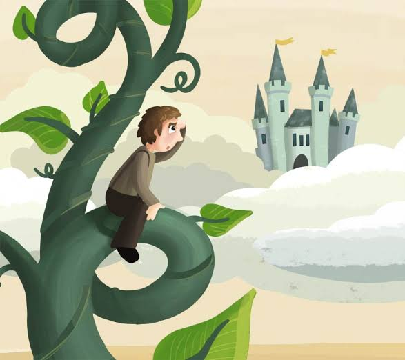
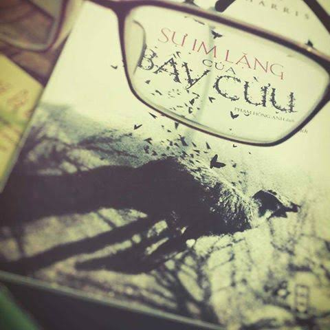

Beauty and The Beast
Cải biên từ bộ truyện tranh kinh điển "Beauty and The Beast" bộ truyện mới mang đậm màu sắc u tối, hiện thực và bi kịch của số phận con người trước quyền lực và hận thù.
Đọc những câu chuyện yêu thích của bạn.

Cải biên từ bộ truyện tranh kinh điển "Beauty and The Beast" bộ truyện mới mang đậm màu sắc u tối, hiện thực và bi kịch của số phận con người trước quyền lực và hận thù.

Trong một thế giới bị bóp nghẹt bởi đói nghèo, Jack đổi gia tài cuối cùng của gia đình lấy một nắm hạt giống lạ, đẩy người mẹ già vào bước đường cùng của sự tuyệt vọng.

Sự im lặng của bầy cừu là bức tranh trần trụi về sự bất lực trước cái ác. Để giải cứu một nạn nhân khỏi kẻ sát nhân lột da, nữ học viên FBI Clarice Starling buộc phải đánh đổi bằng cách phơi bày những tổn thương tâm lý sâu kín nhất cho gã ăn thịt người Hannibal Lecter cấu xé.